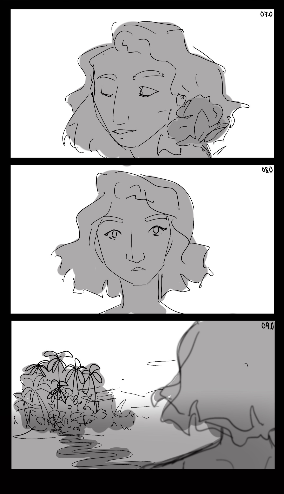
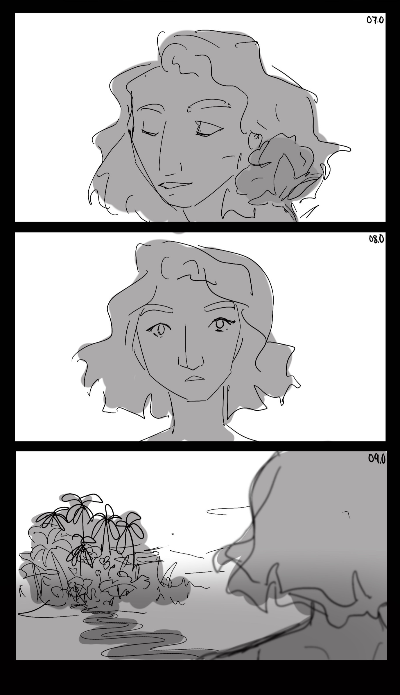

Projects

Summer 2022 · Concept Art, 3D Modeling, Storyboarding
Amazon AMP Advert
Background
As a major Star Wars fan, I first was interested in VFX editing with Adobe AfterEffects in early High School because I wanted to film edits of lightsaber fights with the force, and explosions. Those initial Star Wars edits led me to interning at Blacksmith VFX, a leading post-production company in New York. During my summer at Blacksmith, I was able to explore the post-production process and design timeline. I worked on modeling 3D environments with Unreal Engine 5, designing concept art with Photoshop and Procreate, and creating storyboard drafts. I also had the opportunity to shadow and learn from people working in 2D and 2D rendering and animation, color grading, and more. This blend of practical experience and insights from industry experts provided me with skills and knowledge that have proven invaluable context for my Computer Science coursework in UI-UX, Graphics, and Computer Vision.
The Project
Over the summer, the primary project I worked on was Blacksmith's commercial for Amazon AMP, Amazon's new (as of 2022) live radio app. The commercial involved extensive CGI as it followed a dancer who explored different environments along a wavelength path to the sound of curated music.
My Primary contributions to the project were:
- Creating and modifying an internal storyboard for exploring designs and scenes
- Creating Concept art for the AMP flower design
- Creating 3D Models and concept art for the desert and Oasis with Unreal E5
Storyboarding
While Amazon designers had a different storyboard for the shoot itself, I created an internal storyboard that allowed Blacksmith to test out different possible scenes and endings for the short commercial.
 


Art
Flower Concept Art
A key part of the commercial is the flower in the desert that opens up to reveal the AMP logo. When working on the initial designs for this, I focused on flowers that naturally had both an open and closed state so there would be a reference for the flower's opening movements. I created several references with peonies before we shifted to a design that was a combination of dahlia and sunflower for the final.
Wavelength Pattern Design
Another art feature I worked on was creating a pattern for an animation that would depict the wavelength path within the blue, melancholic garden. The idea was to craft a design reminiscent of Van Gogh's brushstrokes and ripples. This design would then be used in a particle motion-based animation to give the impression of a fluid, watery movement along the pathway.
 .
.
Unreal Desert Models
Unreal Engine allows creators to build realtime 3D content at unprecedented speeds. While it is often used in video game design, it has also been used by shows such as "The Mandalorian" to engineer stunning enviornments and backgrounds.
For this commercial I used Unreal to create a desert enviroment with light haze and distant mountains. I used Unreal's assets and figures to create a customize an oasis reference and different shots of the commerercial's main dancer. Once the flower asset was created, I was able to use a rough version of the actual model in my enviornment. While the team ended up using Matte painting for the final video, the adaptability and speed of Unreal Engine was incredible for finalizing angles and perspectives.


Conclusion
This chance to work with leading designs and adapt my work based on feedback from Amazon's team and Blacksmiths was an amazing opportunity to develop my skills and learn from the best. I also learned from animators and designers working using motion capture and tracking technology to integrate their 3D models into the film faster or render 3D models based on images of a set. Seeing this in action, motivated me during my Computer Vision course the next semester when I was working on writing code behind that process. Similarly, learning about the color grading and filters that created the effect of the final film, helped me during my class of Graphics, enabling me to contextualize the technology and programming that creates those effects.
Interning with Blacksmith also provided me with insight into the design and production process, giving me invaluable industry experience working in a highly fast-paced, collaborative environment!